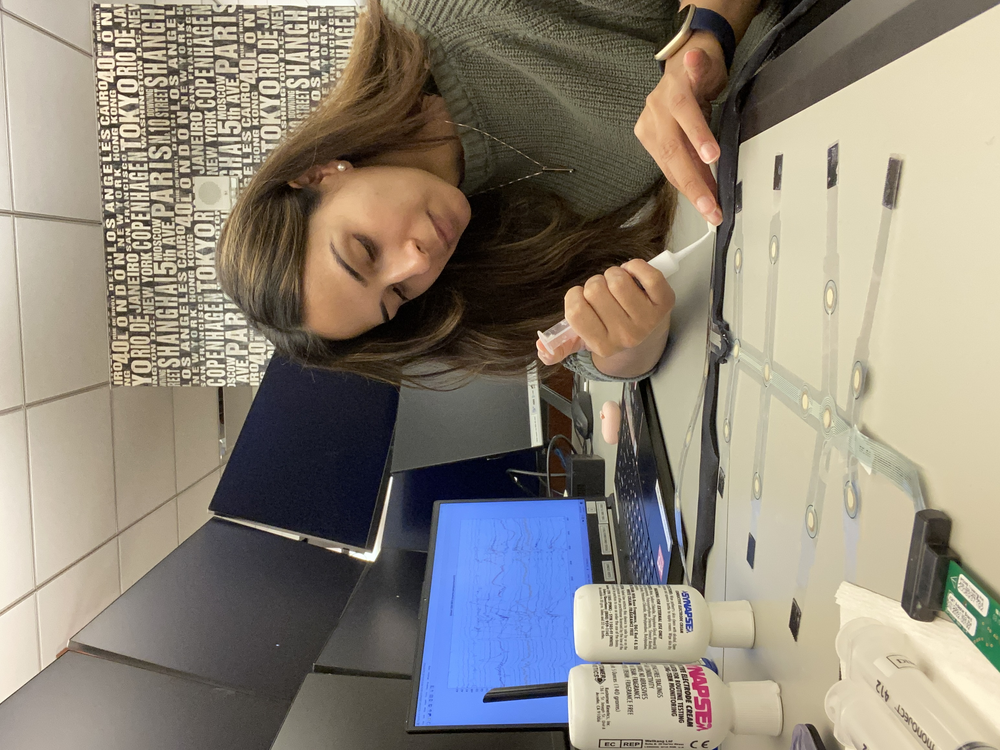
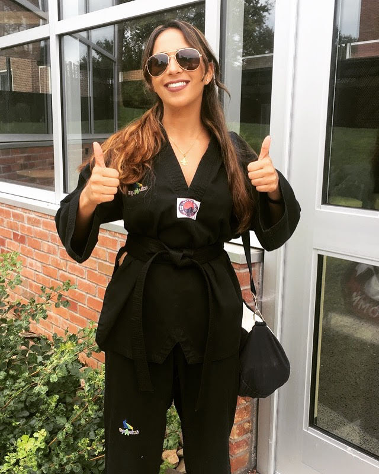
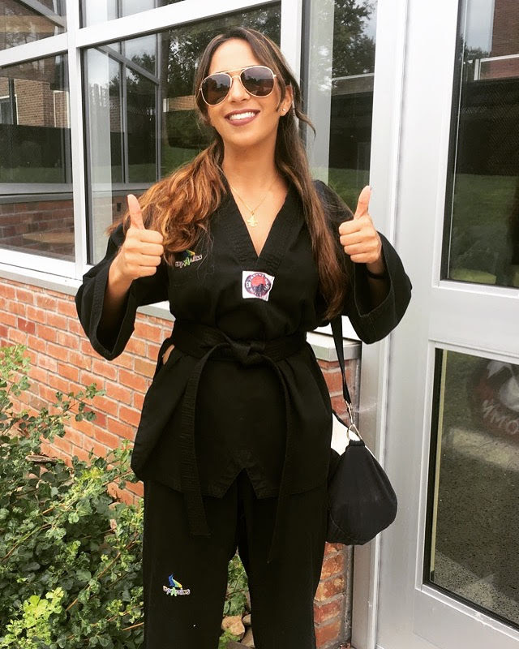
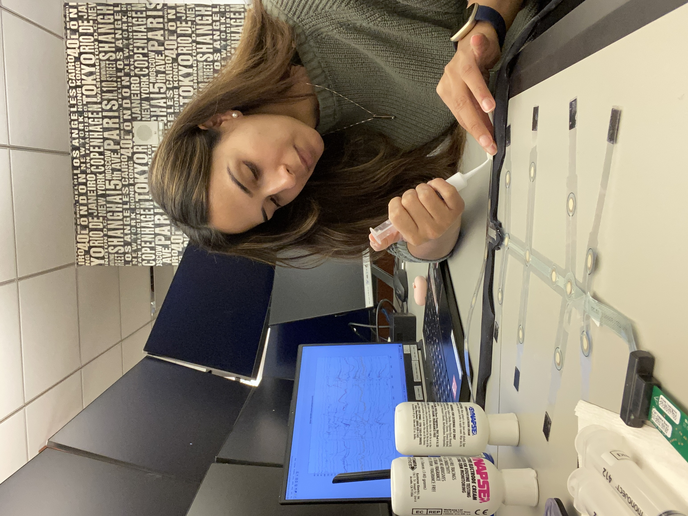
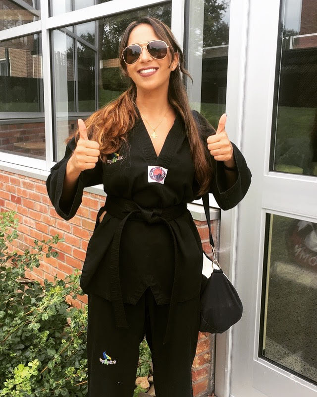

I am deeply fascinated with the field of neurotechonology and its applications in the realm of virtual and augmented realities.
 I practice taekwondo, kung fu, and boxing. I am also an avid mixed martial arts fan.
 


❤️
I am a creator and innovator committed to always leaving things in better shape than when I found them. While supporting research studies that answered how the brain works, I wished that I could delve deeper into the technology that powered the experiments and the algorithms that interpreted the brain signal data. This is what inspired me to become a software engineer. I aspire to have a career in which I can utilize my combined knowledge and skillset to contribute to a mission I truly believe in.
Skilled in: Matlab, SPSS, JavaScript, HTML, CSS, Node, React, Redux, PostgreSQL and Paired Programming.
I am deeply fascinated with the field of neurotechonology and its applications in the realm of virtual and augmented realities.
 I practice taekwondo, kung fu, and boxing. I am also an avid mixed martial arts fan.

Contact & Connect